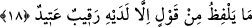

sen seni ilgilendirmeyen yerlerde dolanıyor, Allah’tan ve o iki melekten utanmıyorsun.
Bu iki meleğin kaydetmesinin “yakınlık” anlamının beyanı olması câiz görülmüştür. Zira
kayıt altına alanlar ve yazanlar bunun için vekil olduklarından dolayı kişinin
yaptıklarına muttali olma noktasında daha yakındırlar.
Burada lafzen ve manen oturmak mânâsı ifade edilmiştir. (“Kaîd” ifadelerinden)
ikincisinin ona delaleti sebebiyle birincisi hazfedilmiştir. “Melekler de ardından onun
yardımcılarıdır” (Tahrîm, 66/4) âyetinde de olduğu gibi faîl kalıbının bir ve birden
fazla durum için kullanılabileceği söylenmiştir.
18. İnsan hiçbir söz söylemez ki, yanında gözetleyen yazmaya hazır bir melek
bulunmasın.
“Bir söz söylemez ki” ağzından hayır veya şer çıkmaz ki“yanında” sözlerini takip
eden ve yazan “gözetleyici” bir melek bulunmasın. “Söz” kelime ve kelamdan daha
geneldir. “Rakîb, nazar eden, gözetleyen, gözetleyici; atîd ise yazmaya hazır, yazmaya
âmâde olan demektir. Eğer sözleri hayır ise o kişi sağ ehlindendir, değilse sol
ehlindendir. O melekler hayır ve şer olan şeylerden emredileni yazmaya nerede olursa
olsun hazırdırlar.
Âyette “iki gözetleyici” ve “iki hazır” denilmemiş, bunlar müfred olarak
zikredilmiştir. Çünkü söz konusu işi beraber yapmış olmalarına rağmen tekil zikredilmiş
olmaları, her birisinin arkadaşına değil de bizzat kendisine tevdi edildiği için
gözetleyici olmasından dolayıdır. “Atid” ifadesinde de bu durum söz konusudur. Burada
sadece “kavl/söz”ün zikredilmesi, nassın delaleti ile hükmün fiilde öncelikle sâbit
olması sebebiyledir. Meleklerin ne yazdıkları husûsunda ihtilaf edilmiştir.
Hastalığındaki inlemesi dâhil her şeyi yazarlar, denmiştir. Ecir ve hatâ içeren şeyleri
yazarlar da denmiştir ki bu Hz. Peygamber (s.a.)’den de şu şekilde rivâyet edildiği
üzere daha zâhir olan görüştür:
“İyilikleri kaydeden kâtip, kişinin sağında ve kötülükleri kaydeden kâtip, kişinin
solundadır. İyilikleri kaydeden, kötülükleri kaydedenin âmiridir ve güvenilirdir. Kişi
bir iyilik yaparsa sağdaki melek onu on defa yazar. Eğer kişi kötülük yaparsa sağdaki
soldakine şöyle der: ona yedi saat mühlet ver. Belki tesbih eder de istiğfarda
bulunur.”[238]
İnsanoğlu ihtiyaç giderdiğinde ve cinsî münâsebete girdiğinde meleklerin ondan uzak
durduğu söylenmiştir. Bu sebeple helâda ve ihtiyaç giderildiğinde konuşmak şiddetli bir
şekilde mekruh görülmüştür. Çünkü hafaza melekleri söylenen sözleri yazmak için bu tip
çirkin yerlerde bulunmaktan eziyet duyarlar. Böyle bir durumda kişiye selam verilirse,
ne yapılması gerektiği husûsunda İmam Ebu Hanife, şöyle demiştir: “Meleklerin